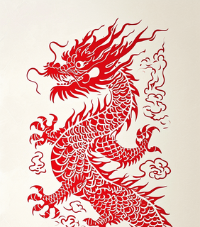
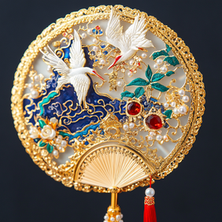
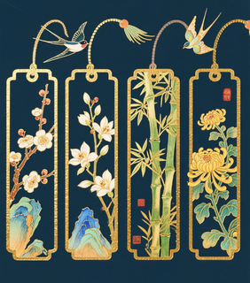

📜 每日国学名句
言之无文，行而不远。
——《左传》
文创小知识
传统文创大多脱胎于非遗技艺，把老手艺简化成低成本DIY材料，更适合校园社团开展手工活动。
社团活动方案
剪纸、团扇手绘、篆刻体验，三类手工材料成本低廉，流程简单，适合文学社、手工社团举办集体活动。
非遗文创鉴赏
匠心手作，国风美学。既可以作为文化赏析内容，也可以对接校园社团采购与电商带货，适合学生创业实践。

非遗剪纸｜中式镂空美学
剪纸是门槛最低的民间非遗技艺，只用剪刀和刻刀，就能在红纸上剪出花鸟瑞兽、吉祥福纹。画面疏密错落，线条干净利落，是中式民俗艺术最直观的体现。
学生用途：手工课作业、社团DIY活动、春节窗花制作、手抄报装饰素材，材料便宜，上手简单。
可DIY手工
古风团扇｜中式温婉美学
团扇起源于汉代，在唐宋风靡一时。扇面圆润饱满，象征阖家团圆。可以手绘水墨花鸟、题写诗词，既是夏日纳凉的用具，也是汉服拍摄、国风演出必不可少的配饰。
学生用途：校园文艺汇演道具、社团手工涂鸦创作、国风写真拍摄道具，变现潜力很大。
国风穿搭好物传统篆刻｜金石文字艺术
篆刻融合书法布局与刀刻技艺，以石材为载体，在方寸之间雕刻篆字。一枚好印章章法均衡、笔力苍劲，自古以来都是文人书画落款的信物，金石文化底蕴深厚。
学生用途：书法作业落款、个人纪念信物、艺术鉴赏课题、毕业文创礼品。
高端非遗文创
国风书签｜书香文创好物
水墨纹样、古典诗词、山水纹样被印在竹木书签上，轻巧精致，兼具观赏性与实用性。价格低廉、受众广泛，是国风文创里销量最高的小物件。
变现方向：社团活动奖品、校园摆摊零售、线上小店一件代发，投入小、回款快，适合学生轻创业。
可电商变现🔥 热门词条
本周手工推荐
空白团扇水墨手绘，只需要毛笔、国画颜料，零基础也能画出淡雅山水花鸟，成品可以当作汉服拍摄道具。
文案素材库
一凿一刻藏匠心，一针一线承文脉，小小的手作里，藏着千年中式审美。
作品投稿
上传你的手作实拍照片，优秀文创作品可以在网站展示，作为社团成果材料。